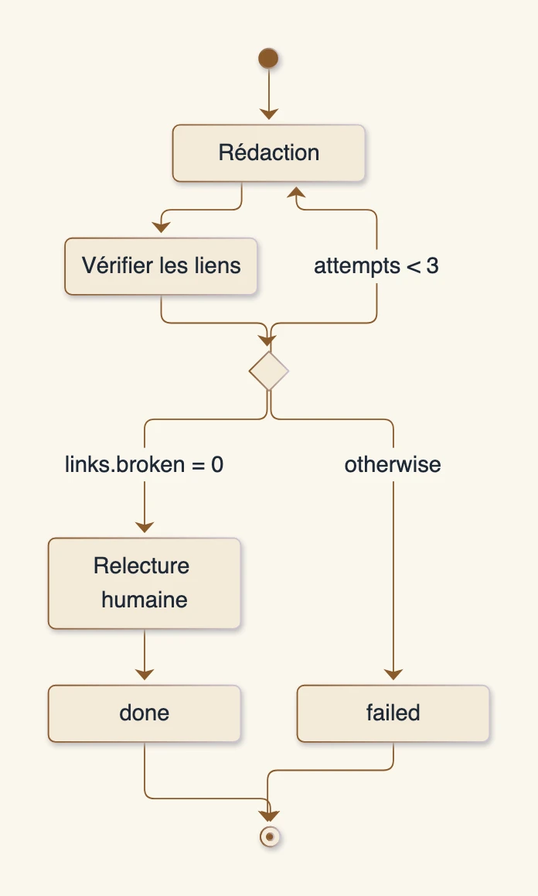

Camille maintient une petite bibliothèque open source. Chaque version se termine de la même façon : rédiger les notes, vérifier qu’aucun lien n’est cassé, demander une relecture à un collègue. Elle aimerait confier les deux premières étapes à un agent. Ce qui la retient n’est pas le talent de l’agent. C’est la peur d’une boucle sans fin, ou d’une branche à laquelle personne n’a pensé, découverte le soir de la sortie.
L’idée en une image
Dans AI-KIDO, un workflow est un seul fichier lisible, .workflow.md. Il contient un diagramme, une description simple de chaque étape et un bloc JSON qui reste la source de vérité. La version 1.5.5 ajoute ce qui manquait autour : des outils qui vérifient le fichier étape par étape, sans appeler aucun modèle, avant qu’un agent ne l’exécute.
Ce que fait Camille : décrire, puis simuler
Dans son éditeur, elle tape la nouvelle commande et répond à ses questions avec ses mots : les étapes, qui fait chacune et comment cela se termine.
- Vous/workflow-new Notes de version : les rédiger depuis CHANGELOG.md, vérifier chaque lien, refaire la rédaction si un lien est cassé (trois essais au plus), puis une relecture humaine.
- AssistantBrouillon
release-notes1.0.0 écrit et validé.
Diagramme : Rédaction → Vérifier les liens → choix → Relecture humaine → terminé, avec un retour à la Rédaction tant que les essais sont < 3, sinon échec.
Simulation : 6 chemins, tous les états couverts, aucun blocage. Le test est complet : je peux l’enregistrer.
Elle ouvre le fichier produit. En haut, le diagramme qu’elle aurait dessiné au tableau ; en dessous, un court paragraphe par étape. Elle lit le workflow comme un document, pas comme du code.

.workflow.md produit, tel que Mermaid le dessine dans n’importe quel lecteur Markdown (VS Code, GitHub). Généré par aikido task workflow render --lang fr avec la CLI 1.5.5 ; le modifier puis lancer sync met à jour le bloc JSON, et inversement.Ce que la simulation lui apprend
Le test remplace chaque agent par un bouchon et parcourt toutes les branches, jusqu’à la limite de boucle qu’elle a fixée. Camille voit chaque chemin et sa fin : succès après zéro, une ou deux reprises, ou échec après trois essais avec un lien cassé. Aucun état n’est laissé de côté, aucun chemin ne reste bloqué.
- 6chemins simulés pour le workflow des notes de version
- 6/6états couverts, aucun blocage
- 3passages au plus par état, la borne fixée par maxAttempts
Sous le capot, le résumé qu’elle a lu vient de ce rapport, raccourci (le rapport complet liste les six parcours) :
{"status":"ok","valid":true,"maxVisits":3,
"paths":[{"trail":["draft","links","links_ok","review","done"],"end":"success"}, …],
"covered":["draft","links","links_ok","review","done","failed"],
"uncovered":[],"terminals":["done","failed"],"complete":true}aikido task workflow test, @aikido-method/cli 1.5.5, sur le workflow ci-dessus (2026-11-24).Modifier une étape en une phrase
Le lendemain, Camille veut aussi vérifier les ancres. Elle le dit en une phrase. L’assistant la transforme en proposition de valeur sur un seul champ, la consigne de l’étape « Vérifier les liens », et lui montre le diff. Rien n’est appliqué avant son accord, et le workflow modifié est validé de nouveau.
Aussi dans la 1.5.5
- /aikido-reviewRelit un changement sur preuves et ne modifie rien. Une remarque n’est gardée qu’avec un scénario concret, des lignes relues et la correction la plus petite ; elles sont numérotées et classées en Bloquant, Important et Mineur.
- aikido depsSignale les versions de dépendances dépassées ou inexistantes. Sur Kimono v0.9.15, il a lu 223 dépendances npm, Cargo, Docker et GitHub : 5 montées majeures, 13 mineures et 13 correctives disponibles, 192 à jour.
- Cartes de tâchesDe nouvelles commandes pour arrêter, supprimer et synchroniser les cartes, une progression explicite, des critères d’acceptation numérotés et un mode de revue humain ou automatique.
- Le format workflow/2Il remplace workflow/1 : un workflow enregistré dans l’ancien format doit être enregistré de nouveau. Publié en version corrective, car aucun espace de production ne contenait de données workflow/1.
Mesurer la part automatisée d’un workflow et le publier vers un Tatami Core Agent passent par /workflow-score et /workflow-publish, qui demandent un Core Agent configuré. Tout ce qui est montré plus haut fonctionne avec la seule CLI.
Essayer
- Installez ou mettez à jour la CLI :
npm install -g @aikido-method/cli@1.5.5, ou suivez la page d’installation. - Dans votre assistant, tapez
/workflow-newet décrivez vos étapes, qui les fait et comment cela se termine. - Lisez le diagramme, vérifiez que le test est complet, puis enregistrez. Pour faire relire un changement d’abord, tapez
/aikido-review.
- AI-KIDO Changelog — version 1.5.5
- AI-KIDO Skill aikido-workflow — 1.5.5
- AI-KIDO Commande /aikido-review — 1.5.5
- AI-KIDO Skill aikido-deps — 1.5.5
- Kimono RAG MCP Dépôt à la version v0.9.15